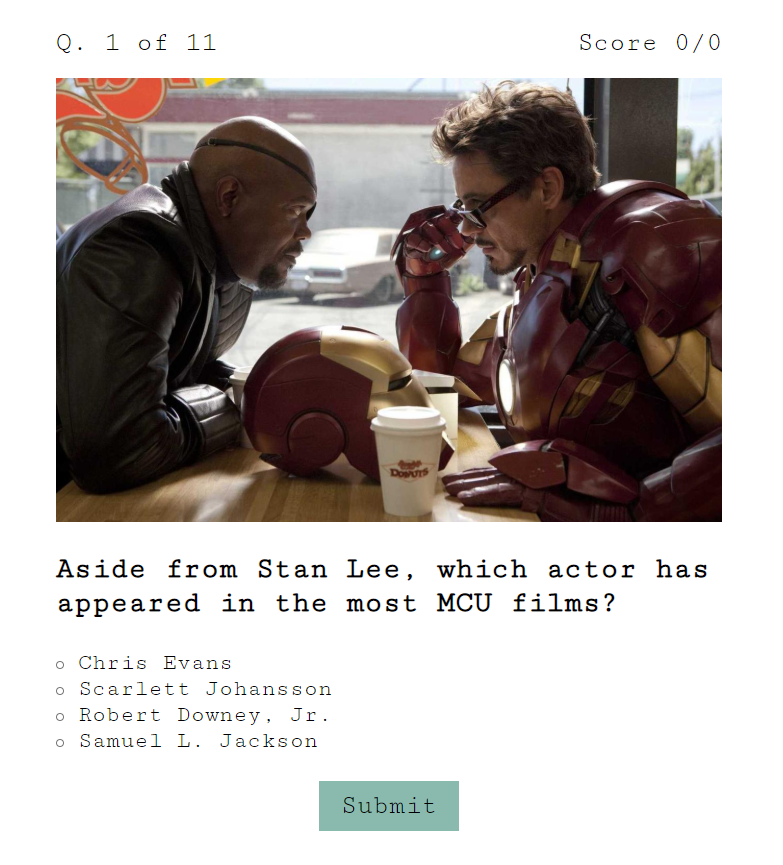

Home
Hello! I'm Minh Nguyen, and I'm an aspiring web developer based out of Columbus, OH. I'm currently immersed in the Thinkful Engineering program to learn modern web development methodologies and technologies, including things like responsive design, JavaScript, jQuery, and React.js.
About Me
I like to think I'm a pretty normal guy. I love things like watching my Browns play on Sundays (they usually lose), going out for a beer with friends, and binge watching Star Trek on Netflix.
However, one of the things that sets me apart from many other people is that I'm endlessly curious. I want to know how things work and why they work. I want to know the thinking that went into specific design decisions, whether that is the Browns' offensive system (wide zone with lots of tight ends and running backs but fewer WRs), or my new Mazda6's engine design (only 4 cylinders but extremely high compression ratio), or Facebook's design philosophy when they created their React library (separate code by application components, not by technologies).
My natural curiosity and love of learning makes software engineering a great fit for my personality. In a nutshell, I would definitely say that one of the most personally satisfying experiences for me is the process of learning relevant technologies (acquiring the tools of the trade), planning out a project, and then systematically building it in an organized and intelligent way that is simultaneously flexible and robust and visually compelling.
When I'm not working on code, I love things like sitting around a bonfire with good friends, hunting down delicious craft beers from around the world, and playing and coaching table tennis at the Columbus Table Tennis Club.
Portfolio
Take a look at some of my recent projects:
- Project Title: Nick and Minh's Marvel Quiz
- Description: This app is a simple and fun single page web app that I created with my friend Nick Thorpe that tests users' knowledge of trivia in the Marvel Cinematic Universe. It shows how an app which appears to have multiple views/pages can be created on a single page without needing to reload the page, resulting in very fast load times.
- Tech stack: This project uses a lot of vanilla JavaScript and jQuery to keep track of the user's actions and choices and to handle various event listeners as they proceed through the quiz.
- Screenshots: 
- Link to project: Live Site Github
- Project Title: Bookmarks App
- Description: This app allows a user to store a list of favorite websites as "bookmarks". It manages information including website title, url, a rating from 1 to 5 stars, and an optional short description. It includes a filter feature that allows the user to filter the results according to star rating, as well as expandable/collapsible bookmark elements. As a solo project, this is a good representation of my design aesthetic, emphasizing clean and minimalist elements, together with a simple color scheme and subtly sophisticated buttons.
- Tech stack: This project uses a lot of jQuery to manipulate the page view as the user creates and deletes bookmarks. It also interacts with an external API to store bookmark data.
- Screenshots:

- Link to project: Live Site Github
Services
The services that I can provide for a client include the following:
- Writing HTML pages
- Styling HTML pages using CSS
- Adding basic interactivity to HTML pages using JavaScript
Contact
The best way to contact me is via email.
You can also find my github profile here, and my linkedin profile here.